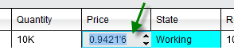
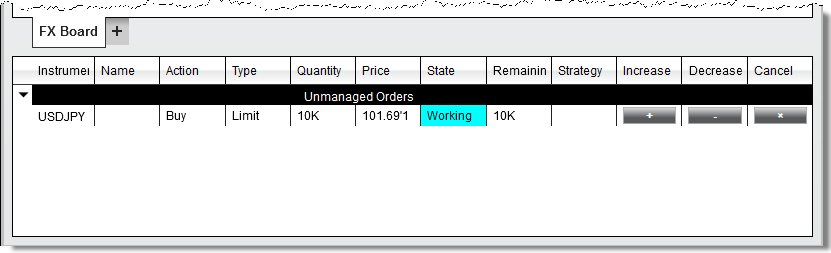
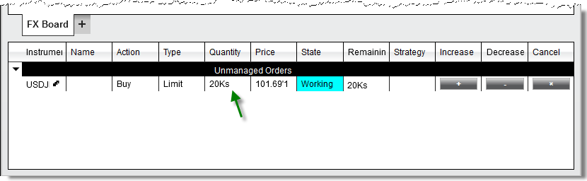
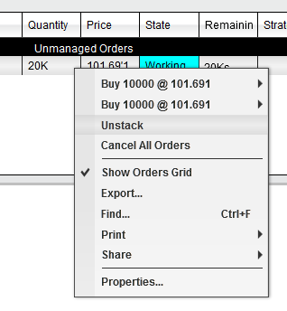
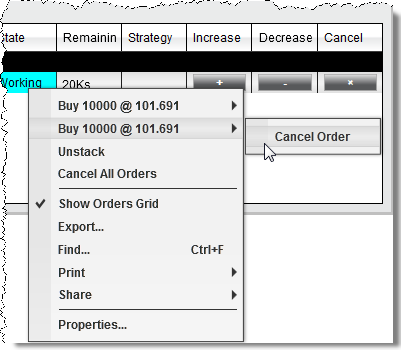

|
<< Click to Display Table of Contents >> Modifying and Cancelling Orders |


|
Modifying and Cancelling Orders
|
<< Click to Display Table of Contents >> Modifying and Cancelling Orders |
|
You can modify an existing order's quantity, price, or cancel an order entirely from Order Grid display of the FX Board window.
Changing the Price of an Order1.You can increase the price of an order in tenth-pip increments by right mouse clicking on the order in the Order Grid and selecting "Increase Price". 2.You can decrease the price of an order in tenth-pip increments by right mouse clicking on the order in the Order Grid and selecting "Decrease Price". 3. Double clicking in the price field will enable the price editor which will allow you to type in a new price manually, or use the scroll wheel on your mouse to select a relative price.
Enabling Increase and Decrease ColumnsYou can optionally enable columns on the Order Grid display which will allow you to increase or decrease the price of an order using a button click.To enable these columns:1. Right click on the FX Board window and select Properties2. Expand the Columns - Orders section3. Check the Increase and/or the Decrease options4. Press OK1. You can increase the price of an order in tenth-pip increments by left mouse clicking on the "+" button2. You can decrease the price of an order in tenth-pip increments by left mouse clicking on the "-" button
Changing the Quantity of an OrderYou can change the size of an order by double left clicking in the either the Quantity or Remaining column, typing in a new quantity value, and pressing the "Enter" key on your keyboard.You can also use the scroll wheel on your mouse, or left mouse click on the up/down arrows in the remaining field using the up/down arrows to scroll to a new size by 1K (1000).
If you would like to break up these orders to manage individually, you can right click on the order row and select Unstack |
Cancelling an Individual Order1. You can cancel an order by left mouse clicking on the "X" button. 2. You can also right click on the order itself and press the "Cancel Order" menu item
Cancelling Stacked OrdersIf you have stacked orders, indicated by the small letter "s" in the Quantity column, you can cancel one of the orders, and leave the other(s) remaining using the steps below:
1. Right click on the stacked order row 2. Move your mouse over the order individual order 3. Select "Cancel Order"
 |